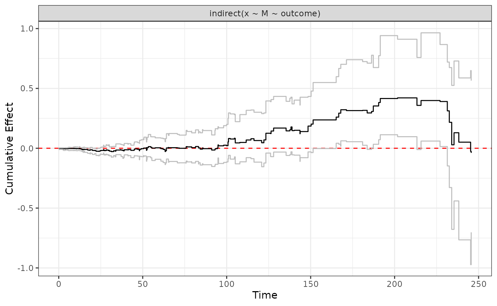
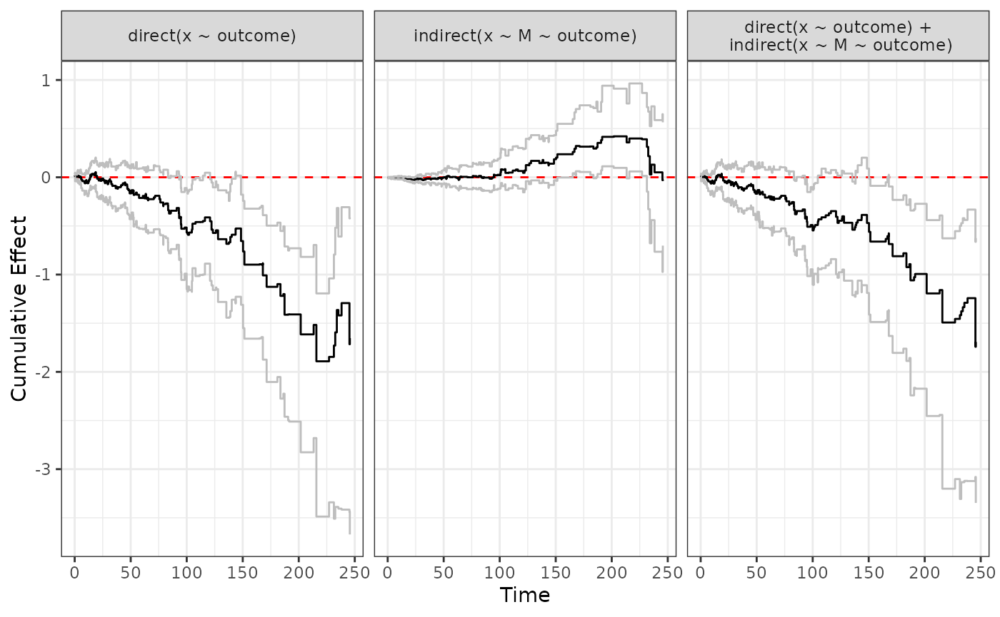
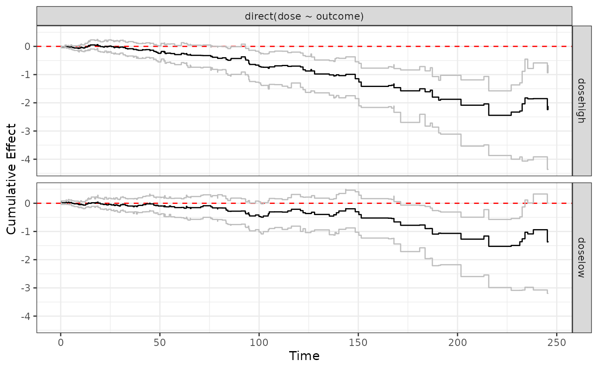
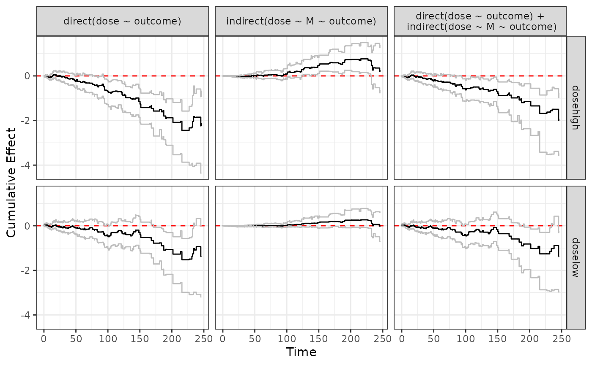
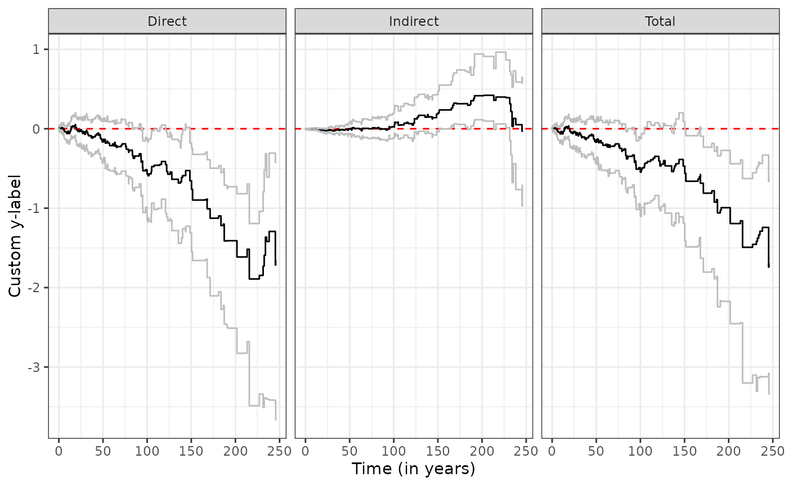

ggplot plotting functionality
Markus Lange
July 26, 2024
ggplot_demo.RmdLoad data and run analysis
data(simdata)
set.seed(1)
# Perform dynamic path analysis
s <- dpa(Surv(start,stop,event)~M+x, list(M~x), id="subject", data=simdata, boot.n=500)
# Calculate direct, indirect and total effects
direct <- effect(x ~ outcome, s)
indirect <- effect(x ~ M ~ outcome, s)
total <- sum(direct, indirect)
# Perform dynamic path analysis under multiple treatment arms:
s2 <- dpa(Surv(start,stop,event)~M+dose, list(M~dose), id="subject", data=simdata, boot.n=500)
# Calculate corresponding direct, indirect and total effects
direct2 <- effect(dose ~ outcome, s2)
indirect2 <- effect(dose ~ M ~ outcome, s2)
total2 <- sum(direct2, indirect2)Basic plotting functionality
ggplot plotting functionality
We can input an object of type “effect”
ggplot.effect(indirect)
Alternatively, we can provide a list of “effect” objects, for example
ggplot.effect(list(direct, indirect, total))
Different dose levels will be plotted on top of each other
ggplot.effect(direct2)
Also works when we plot a list of “effect” objects
ggplot.effect(list(direct2, indirect2, total2))
It is possible to customize plotting parameters, for example
ggplot.effect(list(direct, indirect, total),
titles = c("Direct","Indirect","Total"),
x_label = "Time (in years)",
y_label = "Custom y-label")